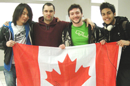

震災サポートセミナー開催のご案内
セミナー日程
第二回震災サポートセミナーは11月17日をもちまして終了致しました。
第三回の開催につきましては来年2月頃を予定しております。
詳細が決まり次第、このページ、また当協会トップページなどでお知らせ致します。
日本ワーキング・ホリデー協会 震災サポートセミナー 概要
2011/3/11に東日本大震災で被害を受けた東北３県（福島、宮城、岩手）の若者達に国際交流（ワーキングホリデー）をサポート致します。
この大震災により実現の難しくなった海外体験を夢としていた若者達を対象に、ワーキング・ホリデー・留学のサポートを致します。
・渡航準備サポート(カウンセリング、セミナーへの参加など)
・ビザ申請料金 ・ホームステイ費用(１ヵ月分)
・渡航サポート費用 など
対象者の職業や年齢を考慮し、短期(１ヶ月～)または長期(半年以上)のプログラムをお選びいただきます。
また詳しい募集要項などはセミナーにてご案内させていただきます。
日本ワーキング・ホリデー協会 震災サポートセミナー 講師紹介
ワーキング・ホリデー協会 永島 拓也（ナガシマ タクヤ）
カナダ・トロントにワーキング・ホリデーで渡航。
語学学校へ通い英語を学びながら、海外の生活や文化を体験。
メキシカンレストラン＆バーで海外の仕事を経験し、生活を１年間する。
その後オーストラリアへ渡り、ゴールドコースト・シドニー・メルボルンなど
さまざまな都市でさまざまな国の方と知り合い、
ファームステイの経験などをしながら１年半生活をする。
その他にもニュージーランド１周やアメリカ渡航なども経験あり。

講師からのコメント
私は出身が福島県大熊町で、東日本大震災に合い、今も警戒区域内に家があるので帰る事が出来ません。
震災はさまざまな事で皆様の当り前や夢というのを一瞬で壊していきました。
あれから約２年の月日が経ち、生活も落ち着き始めたので、ぜひ皆様も自分の将来の為に、広い世界を見てきてください。
同じ東北出身者として、そして海外経験者として、お話が出来ればと思います。
皆様とセミナーでお会い出来る事を楽しみにしております。
よろしくお願い致します。
日本ワーキング・ホリデー協会 震災サポートセミナー お問い合わせに関して
ご質問等、お問い合わせはこちらのメールアドレスまでご連絡下さいませ。
info@jawhm.or.jp
【注意】お電話でのお問い合わせは受け付けておりませんのでご了承ください。